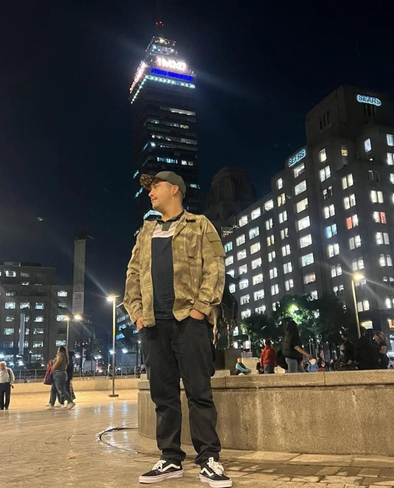

Macro Andrés
Macrofotografía y Naturaleza


¿Quien es Andrés?
¡Hola! Soy Andrés, un joven fotógrafo de Medellín apasionado por la luz, la naturaleza y cada una de sus formas de vida. Desde hace más de 13 años, encontré en la fotografía no solo un arte, sino una forma de conectar con el mundo natural. A través del lente, descubrí que las especies más pequeñas pueden esconder una belleza inmensa. Es ahí, en los detalles y en lo invisible para muchos, donde nace mi inspiración. Mi trabajo se enfoca principalmente en la macrofotografía, capturando la esencia única de cada ser vivo que habita nuestro planeta.
